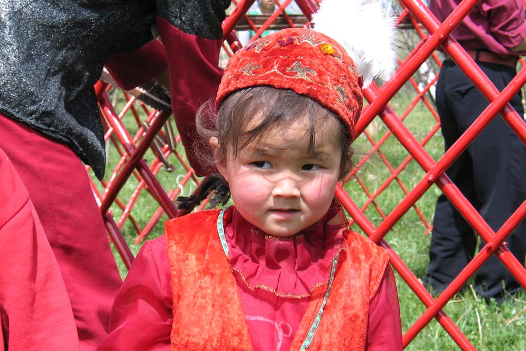
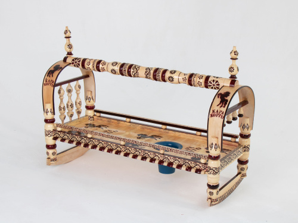

В кыргызской культуре рождение ребёнка сопровождается множеством традиционных обрядов: «бешикке салуу» — укладывание в люльку, «тушоо кесүү» — перерезание пут, и другие.
Устраиваются торжества, приглашаются родственники и соседи, звучат благословения и пожелания долгой жизни и здоровья младенцу.
B старину роды считались опасным и страшным процессом, и даже если ребенок благополучно рождался, не было никакой гарантии, что он выживет в дальнейшем. Многие существующие традиции рождения ребенка в Кыргызстане были направлены на то, чтобы обеспечить ребенку здоровье и долголетие, защитить его от нечистой силы и демонов. Традиции эти зародились в ту пору, когда ислам ещё не был доминирующей религией, поэтому они сочетают в себе множество элементов шаманства и язычества.
Повитуха (киндик-эне) помогала разместить ребёнка в удобное предродовое положение и обрезала пуповину ребёнка сразу после его рождения. Она также помогала защитить новорожденного от злых духов, читая особые заклинания. Повитуха считалась земной реинкарнацией богини Умай-эне и покровительницей рожениц и младенцев, поэтому после родов ей преподносили дары: баранью шкуру и самое лучшее мясо - грудинку.
После рождения младенца проводился праздник дже-энтек той, на котором людей угощали расплавленным маслом (сары мал), специально хранимым для такого случая в желудке забитого ягнёнка (или телёнка). Если ребенок рождался недоношенным, его заворачивали в лисий мех и вывешивали с деревянной рамы юрты. Этот маленький импровизированный гамак передвигали каждый день от правого косяка юрты до тех пор, пока срок не доберется до девяти месяцев, девяти дней, девяти часов и девяти минут – после этого недоношенный считался новорожденным и устраивался дже-энтек.
Другое празднование дня рождения называется Бешик Той. Бешик – это традиционная деревянная люлька, распространённая по всей Центральной Азии, Кавказу и Индии, с арками по обоим концам и соединяющей перекладиной между ними, в которой укачивали ребёнка. Ребёнка в люльку клала старая женщина в знак надежды, что он будет жить также долго, как и она. Новорожденного младенца сорок дней никому не показывают, потому что считается, что ребёнок вступает из мира животных в мир человека только через сорок дней. Специально выбранные люди совершали «помазание» ребёнка сороками каплями солёной воды и дарили ему лоскутное одеяло – Кудак – сшитое из сорока лоскутов ткани (сорок, по одному за каждый день прожитой им жизни).
Когда ребенок только начинал делать первые шаги, проводилась церемония под названием тушоо кесуу: ноги ребенка связывают черно-белой веревкой, символизирующей добро и зло. Гости наперегонки спешат к малышу и тот, кто прибегает первым, разрезают веревку и помогают ему пойти.
Из-за высокой детской смертности были придуманы специальные обычаи, помогающие выходить новорожденное дитя. Например, в семьях, где обычно дети умирали, они могли отдать новорожденного ребёнка другим на условиях, что биологические родители «выкупят обратно» ребёнка через определенное время. Если в семье умирали мальчики, то до 10-12-летнего возраста родители одевали своего сына в девочковую одежду, а волосы заплетали в косы, после чего торжественно стригли ему волосы. Считалось также, что и талисман или амулет оберегали ребёнка от злых духов. Талисманы могли быть в виде кончика хвоста яка или от новорожденного жеребёнка, который вшивали в одежду младенца. Позже, когда кыргызские племена были обращены в ислам, они стали использовать свиток с сурой, взятой из Корана, который давали в амулете в виде треугольника, называемого тумар.
В настоящее время с улучшенными медицинскими условиями дети с большей вероятностью выживают, и многие семьи не проводят все эти церемонии. Некоторые сопровождающие рождение ребенка традиции кыргызов, например, тушоо кесуу, до сих пор популярны, но в большинстве семей нет ни бешика, ни повитухи.
← Назад к регионам